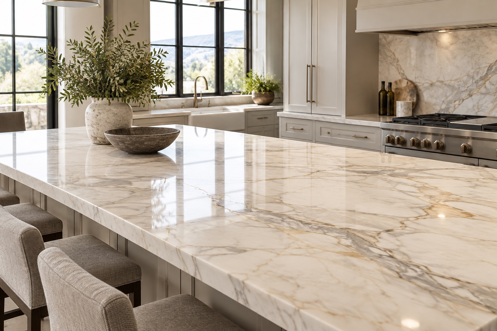
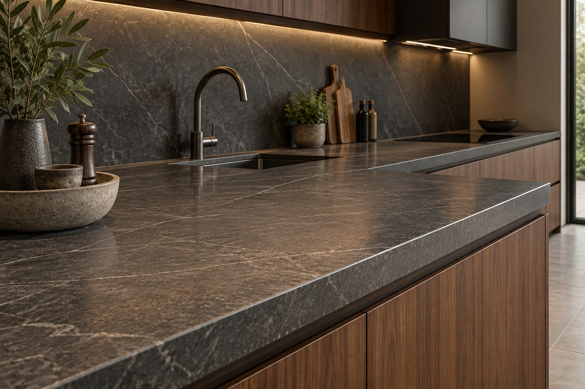

Примерни кухненски острови и работни плотове с различни материали и финиши. Изборът на фолио зависи от състоянието и начина на използване на повърхността.
Снимките са примерни визуализации, а не наши завършени обекти.

ПРИМЕРНА ВИЗУАЛИЗАЦИЯ
Светъл кухненски остров
Примерен мраморен остров с нежни жилки. За подходящи гладки основи се обсъжда прозрачен финиш, който оставя шарката видима.

ПРИМЕРНА ВИЗУАЛИЗАЦИЯ
Тъмен работен плот
Пример за тъмен каменен плот със сатенено излъчване. Преди монтаж се проверяват зоните около мивката, ръбовете и съществуващото покритие.
Имате подобна повърхност?
Изпратете снимка и приблизителни размери, за да обсъдим подходящ материал и финиш.